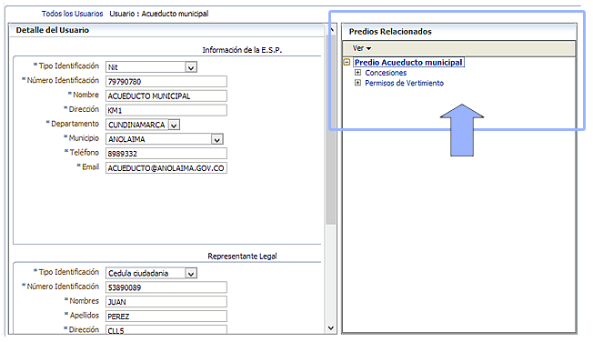

En esta sección usted podrá editar los datos de contacto de un usuario y acceder a formularios para editar la información de predios, actos administrativos, captaciones y vertimientos. Para ello, en todo el sistema usted encontrará en la parte derecha de los formularios "arboles" para desplegar la información de su interés.
